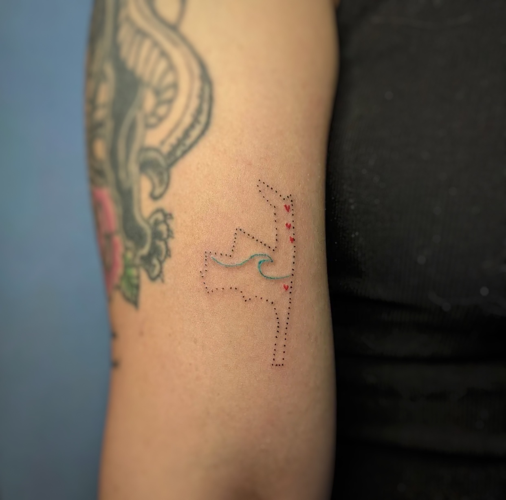
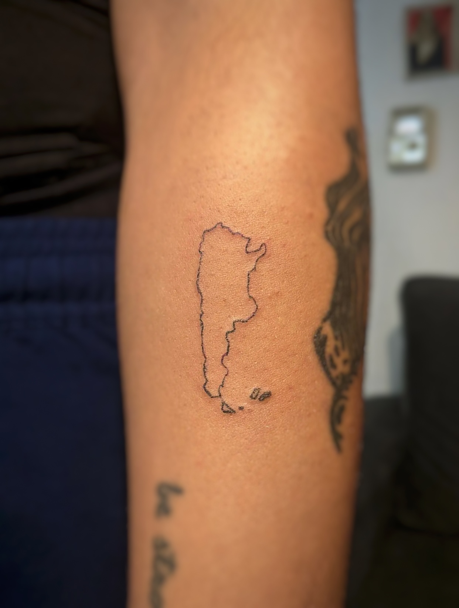
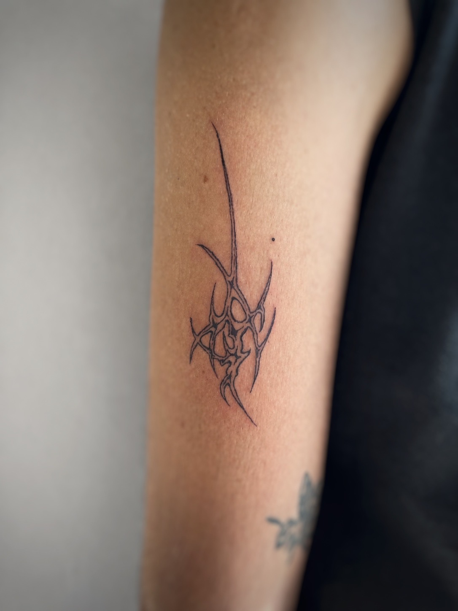

01
01
 02
02
 03
03
 04
04

05
06
07
01
02
03
04

05
06
07/.
Tatuador de fine line enfocado en el equilibrio y la composición atemporal.
Cada pieza es diseñada para coexistir naturalmente con el cuerpo — no como algo ajeno, sino como parte de un todo.
Mi enfoque busca que el tatuaje te acompañe en todos los aspectos de tu vida: en lo cotidiano, en lo profesional, en la intimidad. Sea mi diseño, el tuyo, o algo construido en conjunto — está pensado para permanecer, evolucionar y sentirse propio con el tiempo.
El tatuaje en mi vida muchas veces fue visto como un privilegio y es algo que no pretendo perpetuar. Tuve la suerte de cruzarme con artistas que comparten esa mirada y me ayudaron a concretar esas ideas que tenía en mi piel.
Gracias, Carolina, por regalarme mi primer tatuaje.
Gracias, Camila, por ser mi mentora.
Tengo la convicción de que — al tatuarnos, la tinta y los trazos nos traen muchas emociones y un estado de bienestar que es invaluable. Por eso mismo, pongo mis herramientas y mis ganas a disposición para que podamos sentir ese bienestar sin que eso signifique dejar de lado otras cosas o implique un sacrificio económico.
Si te gusta lo que hago, o si tenés una idea dando vueltas y la querés plasmar, no dudes en escribirme!
Esta página está en construcción, al igual que yo. Gracias por pasar.